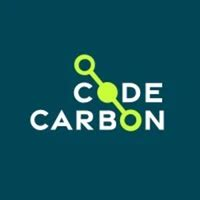
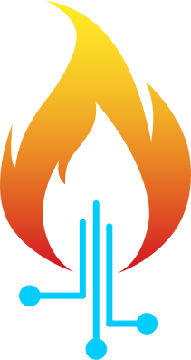

JRAF : Journée de Recherche en Apprentissage Frugal (Days of research on Frugal Learning.)
I had the opportunity to attend this conference at the end of november 2025.
Day 1 : What you don’t measure doesn’t exist
Exhaustive measure of hardware
The first part of the conf was about how to measure the consumption of our applications. We know that the bigger the models, the bigger the requirements in environmental resources (abiotic, water, energy). This particular issues with AI and deep learning applications is that most of the computing is not done on the research site, but the compute resources are rent to cloud providers like azure, aws etc… So the measurements need to be estimated one way or another.
Some researcher tried to measure the impact of computing devices (Falk et al. 2025) but the information from manufacters are quite lacking, so researchers have to use so tricks like retro engineering but in adds more uncertainty to the computations. LLM providers did provide some information about their environemental impact like mistral in this article but we cannnot do anything more than believing them.
What society needs is:
- Transparency
- Clarity of the functionnal unit : Mistral gives its impact for 400 tokens, Google for a median prompt. But does it relate to the usage of the tool ? What are the difference if we generate an image or a video ? how about text only ? Will 400 be enough for most usage or will i need more ? If so why did they choose to give the number for 400 tokens.
- On what perimeter does the number relate ? [Construction|usage|end of life] of the product. scopes (sorry to cite mckinsey :’( )
- Limits : What functions or activities could have been forgotten or were not taken into account ?
It is indeed important to measure but if the measure does not comply with this criterion it can be called green washing or a unethic use of numbers. It is better to not give anything than on purpose incomplete numbers.
Thank you Danilo !
Measure of software
Some tools exists to measure the impacts of your own applications. This could be of interest for example if you have multiple ways of solving a problem, and you want to check which one require the least energy.
Four tools exists for this purpose :
- EcoLogits : give an estimation of the impacts when a request is made to an LLM provider
- Green Algorithm Project : Measure should not be the goal but the way of making people change their behavior, that is way their association work on making their tools as user friendly as possible. They can give certificate to teamas that work on green IT practices through their green disc certification
- CodeCarbon : Uses the drivers of the machine running the computations to track their emmisions in real time.
- Alumet : Provide by this nice guy and coded in rust. This package require a little bit more knowledge but as i understood it, it works at the OS level and track the emission of each process running on a machine.



Each tool has its own public, i think for us data scientist, code carbon is the best. It integrates on existing code and provide detatiled report on the program executions consumptions.
Conclusion on the first day
Now there is no incentives to work on frugality, on the contrary it is cool to do AI agentic AI or anything with as much buzzwords as possible. Some states are starting to debate about it like France but it will require ruling at an higher level.
Christoph Becker ended the day with some social sciences notes. Computer scientist are good at solving problems with technical solution of their expertise. But in some situations, technical knowlege is not the right tool to solve societal issues. His arguments are from his book in open access : the insolvent.


The first evening was the occasion to talk with some old acquaintaces it was a pleasure !
Yoann is working on some interesting topics related to computer vision and sensor fusion. (Dupas et al. 2025). He will defend his Phd in January 2026 i look forward to it :) !!!
Day 2 : General Contributions
(Good) Benchmark is all you need
Thomas Moreau Presented a library he works on Benchopt. ML field is a very experimental field, we are interested by making good results and spend less time on methods and formalism. That is why benchmark is a key component in ML research, if you want to publish your new algorithm, you want to show that it is better than the SOTA. So every researcher run the same computations again and again each time they want to test a new program.
| Short term | Long term | |
|---|---|---|
| Task specific | Challenges/Competitions | SOTA Tracking |
| Generalizable | Research question | BenchmarkFramework |
Most attention is on short term advanced for specific tasks but reliable science needs BenchMark framework that are task independent and makes you run only your own contribution and not the previous baselines.
If you own the computation devices
if you own computation clusters and you have the power to choose the sequencing of jobs Bruno Gaugal presented his work (Gaujal, Girault, and Plassart 2019). He uses job duration estimation to predict the duration of each job and modify the speed in order to get CPU to work at constant speed. If you have enough compute nodes you might prefer auto-scaling, which is scaling the number of active nodes depending on the demand. (Kambale et al. 2025).
Increase inference speed
How can we make the network not use its full neurons if they are not needed ? That is the work of Martial who work on early-exit networks (Guidez et al. 2025).
This is interesting, it allows the network to be big enought at the training, and be as fast as possible at inference. The NN will have a inference time bounded by the prediction of the most uncertain data points. It is an alternative to distillation regarding the reduction of inference time.
LLM
Increase capabilities with smaller models using knowledge graphs (KG). (Mimouni, Moissinac, and Tuan 2020).
How do we link KG with LLm you will ask ? idk, but they do (Pan et al. 2024).
Learning Rate scheduling is cheating
LR scheduling make the learning of the network very variable and it is an hyperparameter very hard to work with, i don’t that it is a bad idea but i tend to dislike their usage in order to be as parcimonious as possible.
Here Bogdan showed us how they used control theory to dynamicaly adjust the learning rate to make the loss decrease as fast as possible. (Zhao et al. 2019)
Conclusion Day 2
We should integrate frugality measurement and try to avoid using big models if what they make us gain is so small comparatively with the increase of computational power required.
i am very happy i attended this event. I could meet nice people and be exposed to what we never see in industry where we are more oriented on results than on externalities.
Should we continue to work on AI ? If not, will we loose competitiveness against our neighbours ? Who should take this kind of decisions ?
Should we accelerate the end or prefer a slow death to share it future generations ?